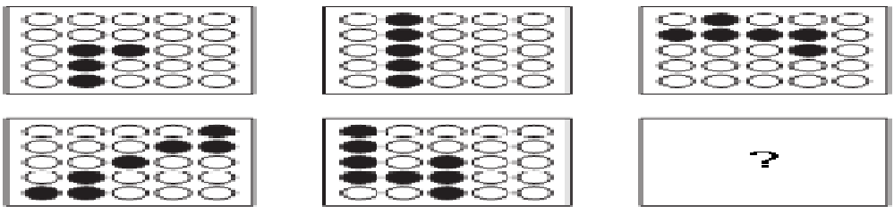
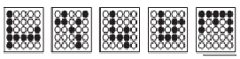
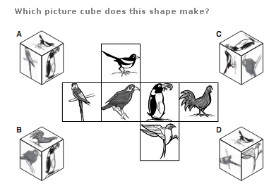

| 1 ) A train running at the speed of 60 km/hr crosses a pole in 9 seconds. What is the length of the train? |
A)120 metres
B)18/0 metres
C)324 metres
D)150 metres |
| 2 ) Two students appeared at an examination. One of them secured 9 marks more than the other and his marks was 56% of the sum of their marks. The marks obtained by them are ? |
A. 39, 30
B. 41, 32
C. 42, 33
D. 43, 34 |
| 3) A fruit seller had some apples. He sells 40% apples and still has 420 apples. Originally, he had: |
A. 588 apples
B. 600 apples
C. 672 apples
D. 700 apples |
| 4 ) A, B and C can do a piece of work in 20, 30 and 60 days respectively. In how many days can A do the work if he is assisted by B and C on every third day? |
A. 12 days
B. 15 days
C. 16 days
D. 18 days |
| 5 ) There is 60% increase in an amount in 6 years at simple interest. What will be the compound interest of Rs. 12,000 after 3 years at the same rate ? |
A. Rs. 2160
B. Rs. 3120
C. Rs. 3972
D. Rs. 6240 |
| 6 ) The cost price of 20 articles is the same as the selling price of x articles. If the profit is 25%, then the value of x is: ? |
A. 15
B. 16
C. 18
D. 25 |
| 7) A sum of money at simple interest amounts to Rs. 815 in 3 years and to Rs. 854 in 4 years. The sum is: ? |
A. Rs. 650
B. Rs. 690
C. Rs. 698
D. Rs. 700 |
| 8 ) Find the greatest number that will divide 43, 91 and 183 so as to leave the same remainder in each case. ? |
A. 4
B. 7
C. 9
D. 13 |
| 9) From a group of 7 men and 6 women, five persons are to be selected to form a committee so that at least 3 men are there on the committee. In how many ways can it be done ? |
A. 564
B. 645
C. 735
D. 756 |
| 10) The least perfect square, which is divisible by each of 21, 36 and 66 is: ? |
A. 213444
B. 214344
C. 214434
D. 231444 |
| 11 ) What is missing the last Grid : |
|  |

A.
B.
C.
D.
E.
|
12 )Which picure cube does this shape make ? |
|  |
|
A.
B.
C.
D.
|
| 13) Odometer is to mileage as compass is to ? |
A. speed
B. hiking
C. needle
D. direction |
| 14) A boat can travel with a speed of 13 km/hr in still water. If the speed of the stream is 4 km/hr, find the time taken by the boat to go 68 km downstream. ? |
A. 2 hours
B. 3 hours
C. 4 hours
D. 5 hours |
| 15) The percentage increase in the area of a rectangle, if each of its sides is increased by 20% is: ? |
A. 40%
B. 42%
C. 44%
D. 46% |